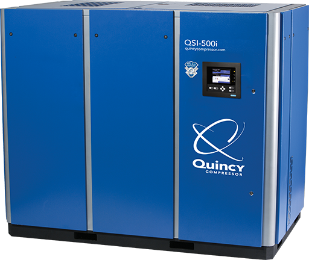
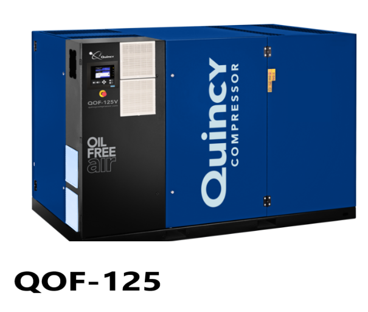
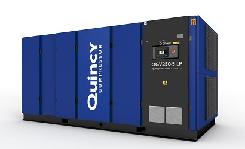
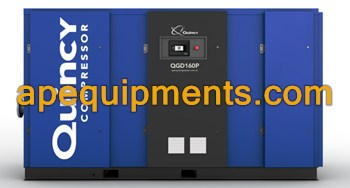
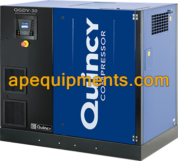

Máy nén khí trục vít Quincy QSI
Dòng máy nén khí trục vít công nghiệp QSI công suất lớn, thiết kế bánh răng và ổ bi chịu tải nặng, đảm bảo khả năng chạy liên tục 24/7 trong môi trường khắc nghiệt như xi măng, thép, khai thác mỏ. Đầu nén bánh răng 3 trục cho phép tốc độ vòng quay thấp, giảm nhiệt và mài mòn tối đa.
| Công suất | 50 – 500 HP (37 – 373 kW) |
| Áp suất | 7 – 14 bar (100 – 200 psi) |
| Lưu lượng | 8.5 – 85 m³/ph |
| Điều khiển | ICON™ Controller màn hình màu |
| Làm mát | Làm mát bằng không khí hoặc nước |
| Bảo hành đầu nén | 24 tháng |

Máy nén khí không dầu Quincy QOF
Dòng máy nén khí trục vít không dầu tuyệt đối (Class 0), sử dụng công nghệ Water Injected Screw độc quyền. Đảm bảo 100% khí đầu ra tinh khiết, không lẫn hơi dầu — tiêu chuẩn vàng cho thực phẩm, đồ uống, y tế và dược phẩm. Không cần bộ lọc dầu bổ sung, tiết kiệm chi phí vận hành dài hạn.
| Cấp độ sạch | ISO 8573-1 Class 0 (không dầu tuyệt đối) |
| Công nghệ | Water Injected Screw (bơm nước bôi trơn) |
| Công suất | 15 – 300 HP (11 – 224 kW) |
| Áp suất | 7 – 10 bar |
| Ứng dụng | Thực phẩm, Dược phẩm, Y tế, Điện tử |
| Chứng chỉ | FDA, ISO 22000, cGMP ready |

Máy nén biến tần Quincy QGV
Dòng máy nén QGV tích hợp công nghệ biến tần VFD hiện đại, tự động điều chỉnh tốc độ vòng quay theo nhu cầu sử dụng thực tế của nhà máy, giúp tiết kiệm lên tới 35% chi phí điện năng tiêu thụ. Màn hình ICON™ 7 inch hiển thị real-time và cảnh báo thông minh.
| Công nghệ | Variable Frequency Drive (VFD) tích hợp |
| Công suất | 10 – 150 HP (7.5 – 112 kW) |
| Tiết kiệm điện | Lên đến 35% so với máy tốc độ cố định |
| Điều chỉnh tải | 0 – 100% liên tục |
| Điều khiển | ICON™ 7" màn hình cảm ứng |
| Kết nối | Modbus, BACnet, SCADA ready |

Bơm chân không trục vít QSVD
Dòng bơm chân không trục vít khô không có tiếp xúc cơ học, không cần dầu bôi trơn trong buồng bơm. Tạo chân không sâu và ổn định cho ngành điện tử, thực phẩm, hóa chất. Chi phí bảo trì cực thấp nhờ thiết kế không tiếp xúc.
| Loại | Trục vít khô không tiếp xúc (Dry Screw) |
| Chân không tối đa | 0.5 mbar (99.95%) |
| Lưu lượng | 100 – 1500 m³/h |
| Công suất | 5 – 75 kW |
| Làm mát | Không khí hoặc nước |
| Bảo trì | Tối thiểu, không dầu buồng bơm |

Máy nén khí pittông Quincy QR-25
Dòng máy nén khí pittông huyền thoại QR-25 của Quincy, được chế tạo từ thân gang đúc nguyên khối với độ bền vượt thời gian. Thiết kế pittông đơn hoặc kép, phù hợp các xưởng cơ khí, garage, cơ sở sản xuất nhỏ và vừa cần khí nén áp cao tin cậy.
| Loại | Pittông đơn / kép (Single / Two-Stage) |
| Công suất | 1.5 – 30 HP |
| Áp suất tối đa | 175 psi (12 bar) / 200 psi (14 bar) |
| Thân máy | Gang đúc nguyên khối |
| Ứng dụng | Cơ khí, Ô tô, Xưởng nhỏ |
Lõi lọc dầu & tách dầu Quincy
Lõi lọc dầu, lọc không khí, lõi tách dầu chính hãng cho toàn dòng QSI, QGV, QOF, QR-25. Thay thế đúng chu kỳ giữ hiệu suất máy.
Bộ Kit bảo dưỡng 2000h/4000h/8000h
Bộ kit đầy đủ theo chu kỳ bảo dưỡng chuẩn nhà máy: lõi lọc, ron, dầu tổng hợp, hướng dẫn kỹ thuật từ Quincy.
Board điều khiển ICON™ & cảm biến
Bo mạch điều khiển ICON™, cảm biến áp suất, cảm biến nhiệt độ, van solenoid chính hãng Quincy cho tất cả dòng máy.
Dầu Quincy Quin-Syn Plus
Dầu tổng hợp PAO chính hãng Quincy. Chu kỳ 8.000h. Sử dụng đúng loại dầu chính hãng để đảm bảo điều kiện bảo hành máy.
Phớt trục & Ron làm kín
Seal kit, phớt cơ khí, O-ring PTFE/Viton/NBR chuyên dụng cho tất cả dòng máy nén Quincy.
Van an toàn & Van áp suất tối thiểu
Van an toàn, van áp suất tối thiểu (minimum pressure valve) chính hãng. Kiểm tra và thay thế theo chu kỳ bảo dưỡng.
Đặt hàng phụ tùng nhanh chóng
Cung cấp Model + Serial Number + Số giờ vận hành để nhận tư vấn và báo giá từ kỹ sư APE trong 30 phút.